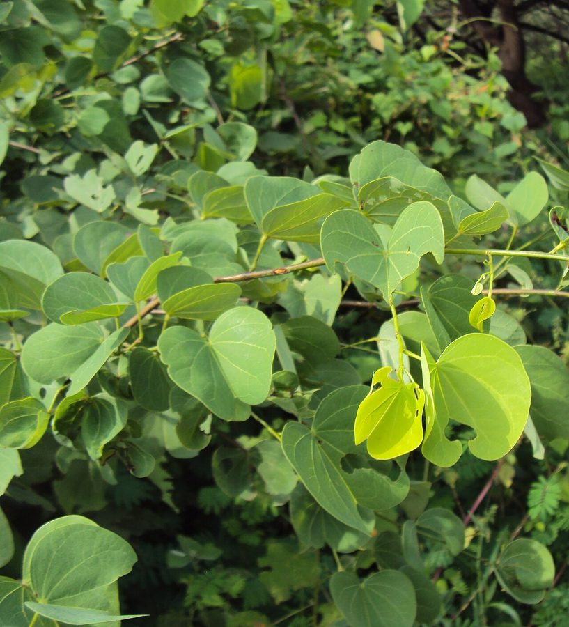

मालाबार बौहिनियाMalabar Bauhinia
Piliostigma malabaricum · Fabaceae · FLR-0411

- Scientific name वैज्ञानिक नाम
- Piliostigma malabaricum (Roxb.) Benth.
- Family कुल
- Fabaceae
- Hindi हिंदी
- मालाबार बौहिनिया
- Local names स्थानीय नाम
- malabar bauhinia, amli
- Status here यहाँ की स्थिति
- native
- Movement आवागमन
- Resident, here all year
- Known from कहाँ दर्ज
- Others have published records from the wider Awadh–Purvanchal plain, none yet from Basti–Ayodhya अवध–पूर्वांचल से दूसरों के प्रकाशित अभिलेख, बस्ती–अयोध्या से अभी नहीं
- IUCN IUCN
- LC
- Review समीक्षा
- not yet reviewed
When to look कब देखें
Present all year. साल भर मौजूद।
Uses and possibilities उपयोग और संभावनाएँ
Drawn from the documented uses in the profile below, where each is labelled traditional, current or a research lead. All uses →
Tell it apart from इनसे अलग पहचानें
मालाबार बौहिनिया / Malabar Bauhinia
Piliostigma malabaricum (Roxb.) Benth. — Fabaceae
मालाबार बौहिनिया — जिसे कचनार कुल में खट्टी पत्ती वाला पेड़ या अमली भी कहते हैं, यह नम जंगलों और बगीचों के किनारों पर उगने वाला एक सुंदर मध्यम पेड़ है। इसकी पत्तियाँ कचनार की तरह बीच से दो भागों में जुड़ी ऊंट के खुर जैसी होती हैं, जिन्हें चबाने पर खट्टा स्वाद आता है। इसके छोटे मटमैले सफेद फूल पतझड़ में खिलते हैं।
Quick Identification त्वरित पहचान
| Feature | Description |
|---|---|
| Tree habit | Moderate-sized deciduous tree with a bushy, rounded crown |
| Bark | Dark brown or greyish-brown, rough, deeply exfoliated into long fibrous strips |
| Leaves | Bilobed, broader than long, divided about one-third down into two rounded lobes |
| Leaf taste | Conspicuously acid and tart to the taste when fresh |
| Inflorescence | Terminal and axillary dense tomentose racemes or corymbs |
| Flowers | Subdioecious, dull whitish or cream-coloured, small, petals spathulate |
| Fruit | Long, flat, woody, curved pods with distinct reticulate reticulations |
Field tip: Pluck and chew a tender leaf fragment: it has a distinct, pleasantly tart and acidic taste, unlike any other local Bauhinia.
हिंदी: ऊंट के खुर जैसी दो फांक वाली पत्तियाँ जिन्हें चबाने पर खट्टा स्वाद आए और मटमैले सफेद फूल इसकी मुख्य पहचान हैं।
Morphology आकारिकी
Measurement not available in consulted sources.
A moderate-sized deciduous tree with an erect trunk and a dense, bushy crown. Bark dark brown or greyish-black, rough, peeling off in long, narrow, longitudinal fibrous flakes; inner bark reddish-pink and fibrous. Branchlets slender, terete, marked with small lenticels, young shoots covered in rusty puberulence.
Leaves alternate, simple, distinctly bilobed, broader than long, cordate at the base, divided for about one-third to one-fourth of their length into two obtuse, rounded lobes, glaucous and paler beneath with fine reticulate venation and sparse brownish pubescence; petiole slender, thickened at both ends; taste characteristically sour and acid.
Inflorescence consisting of terminal and axillary dense, short, tomentose racemes or corymbs. Flowers subdioecious, dull white, cream-coloured or pale yellowish. Calyx tubular, five-toothed, densely tomentose with brownish hairs, splitting spathe-like down one side. Petals five, spathulate, oblong, subequal, white or cream. Fertile stamens ten in male flowers; reduced to ten small staminodes in female flowers.
Fruit a flat, linear-oblong, straight or slightly falcate woody pod (legume), brownish-black when ripe, marked with raised reticulate veins, indehiscent or dehiscing very tardily on the tree. Seeds numerous, arranged in two rows, ovate, compressed, smooth, dark brown.
हिंदी: पत्तियाँ चौड़ी और आगे से दो गोल भागों में बंटी होती हैं। मटमैले सफेद रंग के छोटे फूल खिलते हैं। फलियां लंबी, चपटी, लकड़ी जैसी सख्त और धारियों वाली होती हैं।
Behaviour & Ecology व्यवहार और पारिस्थितिकी
A native tree of moist and mixed deciduous tracts across tropical South Asia. It typically occurs along streams, valley bluffs, and moist forest borders where alluvial soil retains subsoil moisture throughout the year.
The species exhibits functional dioecy or polygamodioecy, with individual trees producing predominantly male or female flowers, necessitating cross-pollination by insects. The distinctive acidic taste of the foliage is due to high concentrations of organic acids, which provide natural chemical defense against many browsing herbivores.
हिंदी: यह पेड़ नदियों और नालों के किनारे नमी वाली मिट्टी में अच्छी तरह बढ़ता है। पत्तियों में खट्टापन होने से कई जानवर इसे आसानी से नहीं खाते।
Life Cycle / Phenology जीवन चक्र
Leaves are renewed during the hot pre-monsoon period in April and May, with the tree remaining green through the monsoon rains.
Flowering begins in September and continues through October and November. The dull whitish flowers open on humid mornings and are pollinated by bees and flies. Long woody pods develop during the winter months and mature by February or March, hanging on the bare or leafy branches well into the following summer before falling or slowly breaking apart.
हिंदी: अप्रैल-मई में नई पत्तियाँ आती हैं। सितंबर से नवंबर के बीच फूल खिलते हैं और सर्दियों में फलियां पककर गर्मियों तक लटकी रहती हैं।
Associated Species / Interactions सहजीवी प्रजातियाँ
The blossoms attract nectar-seeking honeybees and wild halictid bees.
In moist grove margins and river valleys, it grows alongside related species such as kachnar (Bauhinia variegata), purple orchid tree (Bauhinia purpurea), and dhak (Butea monosperma). Birds utilize the dense canopy for roosting.
हिंदी: कचनार और ढाक के साथ यह प्राकृतिक रूप से मिश्रित जंगलों में उगता है।
Pests and Diseases कीट और रोग
Foliage is occasionally affected by powdery mildew and leaf rust in late winter. Leaf-mining larvae can cause pale serpentine galleries on mature leaves without causing significant defoliation.
हिंदी: सर्दियों में पत्तियों पर कभी-कभी फफूंद या कीड़ों के टेढ़े-मेढ़े निशान पड़ जाते हैं।
Agricultural / Human Relevance कृषि प्रासंगिकता
Duthie (1903, 1: 298–299) gives its vernacular names as amli, imli, khat papri and khatia jhinjhora, and records that the leaves are very acid and are sometimes eaten.
हिंदी: डूथी (1903) इसके स्थानीय नाम अमली, इमली, खट पपरी और खटिया झिंझोरा देते हैं, और लिखते हैं कि इसकी पत्तियाँ बहुत खट्टी होती हैं और कभी-कभी खाई जाती हैं।
Expected Locally स्थानीय रूप से अपेक्षित
Not a field record. Written from published accounts for eastern Uttar Pradesh. No confirmed local sighting yet — if you have seen it, that is what the atlas needs.
अभी तक स्थानीय पुष्टि नहीं। यह विवरण प्रकाशित स्रोतों से है, किसी अवलोकन से नहीं।
Expected in moist woodland patches, ravine slopes along the Ghaghara basin, and older village grove margins across Basti, Ayodhya, and neighbouring districts. GBIF holds published records from the wider Awadh–Purvanchal plain, none yet from Basti–Ayodhya. The first verifiable record from the region will be a dated photograph of flowering plants or a population in a weed habitat or field border with district and coordinates.
हिंदी: बस्ती और अयोध्या में नदी के तराई वाले जंगलों और पुराने बागों के किनारों पर इसके मिलने की संभावना है।
Distribution वितरण
Global range: Native across South and Southeast Asia, from India and Nepal through Myanmar, Thailand, Cambodia, Vietnam, Malaysia, and the Philippines.
In India: Widely distributed in the Sub-Himalayan tract, the Gangetic plain, the Western Ghats, and the deciduous forests of peninsular India.
In Uttar Pradesh: Distributed along the Tarai forest belt and moist riverine zones across eastern and northern districts.
In Basti district / eastern UP: Expected along moist river bluffs and protected grove woodlands.
हिंदी: यह पेड़ भारत, नेपाल और दक्षिण-पूर्व एशिया के नम पर्णपाती वनों में विस्तृत रूप से पाया जाता है।
Research Questions शोध प्रश्न
- What is the organic acid profile responsible for the characteristic sour taste of its leaves in eastern UP populations?
- How does the reproductive success of functionally female trees vary with distance from male trees in fragmented groves?
- Which butterfly species use this tree as their primary larval host in the Gangetic plains? / गंगा के मैदानी इलाकों में कौन सी तितलियाँ इस पेड़ को अपना मुख्य पोषक पौधा मानती हैं?
- Are young leaves more sour than old ones, and does the sourness change through the year? / क्या नई पत्तियाँ पुरानी पत्तियों से अधिक खट्टी होती हैं, और क्या खट्टापन साल भर बदलता है?
- Can a child chew a tiny piece of the leaf and describe its resemblance to the sour taste of tamarind?
हिंदी: क्या इसकी पत्तियों का खट्टा स्वाद इमली जैसा लगता है और इसके नर व मादा पेड़ों में क्या अंतर होता है?
Similar Species मिलती-जुलती प्रजातियाँ
| Species | How to tell apart | हिंदी | |
|---|---|---|---|
| `[[kachnar\ | Bauhinia variegata]]` | Large showy fragrant pink or white flowers with purple markings; leaves not sour to the taste | फूल बड़े और गुलाबी-सफेद होते हैं, पत्तियाँ खट्टी नहीं होतीं |
| `[[purple_orchid_tree\ | Bauhinia purpurea]]` | Large purple orchid-like flowers with 3 to 4 fertile stamens; leaves larger, cleft deeper | फूल गहरे बैंगनी और बड़े होते हैं, पत्तियाँ अधिक गहराई तक कटी होती हैं |
Field rule: Look for the distinctly sour, acidic taste of the leaves and small dull whitish flowers in dense rusty-tomentose racemes.
हिंदी: पत्तियों का तीखा खट्टा स्वाद और छोटे मटमैले सफेद फूल इसे कचनार की अन्य प्रजातियों से अलग करते हैं।
Taxonomy & Classification वर्गीकरण
Original description. First described as Bauhinia malabarica by William Roxburgh in 1832 in Flora Indica, edition 1832, volume 2, page 321. Transferred to Piliostigma by George Bentham in 1852 in Miquel's Plantae Junghuhnianae, page 261.
Subspecies. Often retained under Bauhinia malabarica Roxb. in traditional Indian forestry manuals (Duthie 1903; Hooker 1878; Brandis 1906). Monotypic in our region.
Family and order placement. Placed in family Fabaceae (subfamily Cercidoideae), order Fabales.
Phylogenetic notes. Placed in Piliostigma, segregated from Bauhinia sensu stricto on account of its dioecious flowers and indehiscent woody pods.
IUCN status rationale. Assessed as Least Concern (LC) on the IUCN Red List due to its extensive geographical distribution, common occurrence in South Asia, and lack of significant threats.
हिंदी: यह मटर कुल (फैबेसी) का पौधा है। रॉक्सबर्ग के 1832 के नाम को बेंथम ने 1852 में पिलियोस्टिग्मा में रखा था। आईयूसीएन ने इसे संकटमुक्त माना है।
Photo Gallery फोटो गैलरी
No photos yet — add field photos to media/species/malabar_bauhinia/ and run node scripts/sync_photos.js.
Photos needed आवश्यक फोटो
- [ ] Bilobed leaves showing glaucous underside (दो भागों में बंटी पत्तियाँ)
- [ ] Inflorescence of dull whitish flowers (मटमैले सफेद फूलों का गुच्छा)
- [ ] Mature woody reticulate pods hanging on branches (शाखों पर लटकी सख्त फलियां)
References संदर्भ
- Bentham, G. (1852). In Miquel, Plantae Junghuhnianae, p. 261.
- Duthie, J. F. (1903). Flora of the Upper Gangetic Plain and of the Adjacent Siwalik and Sub-Himalayan Tracts, vol. 1, part 1, pp. 298–299. (as Bauhinia malabarica)
- Hooker, J. D. (1878). The Flora of British India, vol. 2, p. 277. (as Bauhinia malabarica)
- Brandis, D. (1906). Indian Trees, Archibald Constable & Co., London, p. 256. (as Bauhinia malabarica)
- IUCN (2018). Bauhinia malabarica: BGCI & IUCN SSC Global Tree Specialist Group. The IUCN Red List of Threatened Species, 2018. doi:10.2305/iucn.uk.2018-2.rlts.t136088194a136088196.en.
- GBIF Occurrence Data — Piliostigma malabaricum, India (2025).
Source file: species/flora/trees/malabar_bauhinia.md